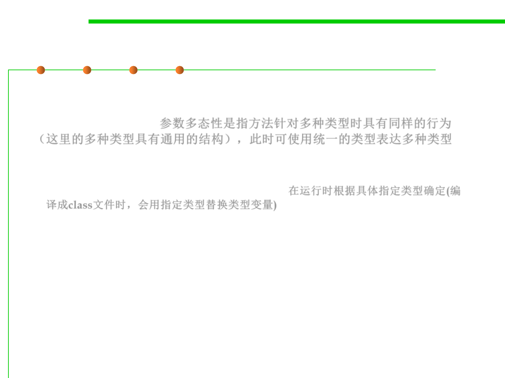

Parametric polymorphism
3.4 Object-Oriented Programming (OOP)
▪ Parametric polymorphism is obtained when a function works
uniformly on a range of types; these types normally exhibit some
common structure. 参数多态性是指方法针对多种类型时具有同样的行为
（这里的多种类型具有通用的结构），此时可使用统一的类型表达多种类型
– It’s the ability to define functions and types in a generic way so that it
works based on the parameter passed at runtime, i.e., allowing static type-
checking without fully specifying the type. 在运行时根据具体指定类型确定(编
译成class文件时，会用指定类型替换类型变量)
– This is what is called “Generics (泛型)” in Java.